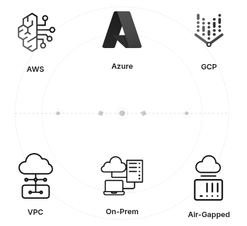

Becoming a 10x Developer
AI-powered Coding Assistants
Features:
- Trained on code repositories and can assist with most programming languages and frameworks
- Provides code suggestions, explanations, and automated implementations based on natural language prompts and existing code context.
Examples:
Coding Agents
- Agents enable multi-step tasks that go beyond simple code suggestions and chat interactions.
- You can create agent sessions that run locally or in the cloud, interactively or in the background.
See: Using agents in Visual Studio Code
Agents Core Capabilities
- End-to-End Autonomy: Agents manage complete coding tasks by breaking down high-level objectives into actionable steps, moving beyond simple code completions or chat.
- System Interaction: They can read error messages, modify multiple files simultaneously, execute terminal commands, and verify results (e.g., running tests).
- Self-Correction: Agents monitor their own progress and adapt their approach if they encounter errors or failed tests during execution.
Integration in VS Code
- Flexible Environments: Sessions can
- run locally (interactive or background) or
- in the cloud for collaborative, remote workflows.
- Unified Management: The VS Code Chat view serves as the central hub to monitor, manage, and interact with all active agent sessions.
Types of Agents
VS Code supports four main categories of agents, each designed for different use cases and levels of interaction:

See: Types of agents.
First Challenger: Cursor
- Tab, Tab, Tab: “Our custom autocomplete model predicts your next actions.”
- Trained on
git diffofgit commits and Pull Requests (PRs) .. not just code
- Trained on
- Composer 1: their 1st proprietry model
- Trained specifically for “agentic” coding using reinforcement learning (RL) within actual development environments.
- Cursor CLI: Built to help you ship, right from your terminal.
Better than VS Code.
New Challengers
Antigravity
- Higher-level Abstractions: A more intuitive task-based approach to monitoring agent activity, presenting you with essential artifacts and verification results to build trust.
- Cross-surface Agents: Synchronized agentic control across your editor, terminal, and browser for powerful development workflows.
- User Feedback: Intuitively integrate feedback across surfaces and artifacts to guide and refine the agent’s work.
- An Agent-First Experience: Manage multiple agents at the same time, across any workspace, from one central mission control view.
Why enterprises choose Cline

- We don’t see your code and prompts: Client-side architecture. When you bring your own inference, data flows from you to your provider. We’re not in the middle.
- Bring your own inference: Connects directly to Amazon Bedrock, GCP Vertex, Azure OpenAI, or models running on your servers. Keep data within your security perimeter.
- Deploy on your infrastructure: Secure your data by deploying within VPC, on-prem, or air-gapped environments. You control where it runs and how it’s configured.
Tokens and Pricing
How do these models think and how much they cost?
The Path to Becoming a “10x Developer”
Total Estimated Reading Time: ~2 hours (excluding setup and practice time).
Essential IDE Tips and Tricks
Before working with AI, let’s work with the IDE:
Personalize the look and feel:
- Set your Theme ~ 2 min
- Set your Font to ‘Fira Code’ ~ 2 min
Memorize these tricks:
- Code Navigation ~ 10 min
- Editing Hacks! ~ 10–15 min
- Define your own Snippets! ~ 10 min
AI-IDE Tips and Tricks
Now, let’s focus on how the IDE makes AI work for us:
- Copilot Smart Actions ~ 5 min
- Prompt engineering ~ 15 min
- Context Engineering ~ 10 min
Never, copy-paste into ChatGPT anymore.
Improve the feedback loop:
- Test-Driven Development ~ 10 min
- Debug with AI ~ 5 min
Doing Data Science?
- Edit Notebooks with AI ~ 5 min
Necessary customizations:
- Problem 1: “AI writes out-of-date code”
- Problem 2: “I want AI to also write commands, not just code”
- …etc.
Enter: GitHub Copilot Customization ~ 10 min
- Use MCP servers in VS Code ~ 10 min
- MCP Tools:
- Context7 (Upstash): ~ 5 min (Solution to Problem 1)
- DBHub (Bytebase): ~ 5 min (Solution to Problem 2)
- Unity MCP: Control the Unity Editor from MCP clients via a Unity bridge + local Python server.
Reference: